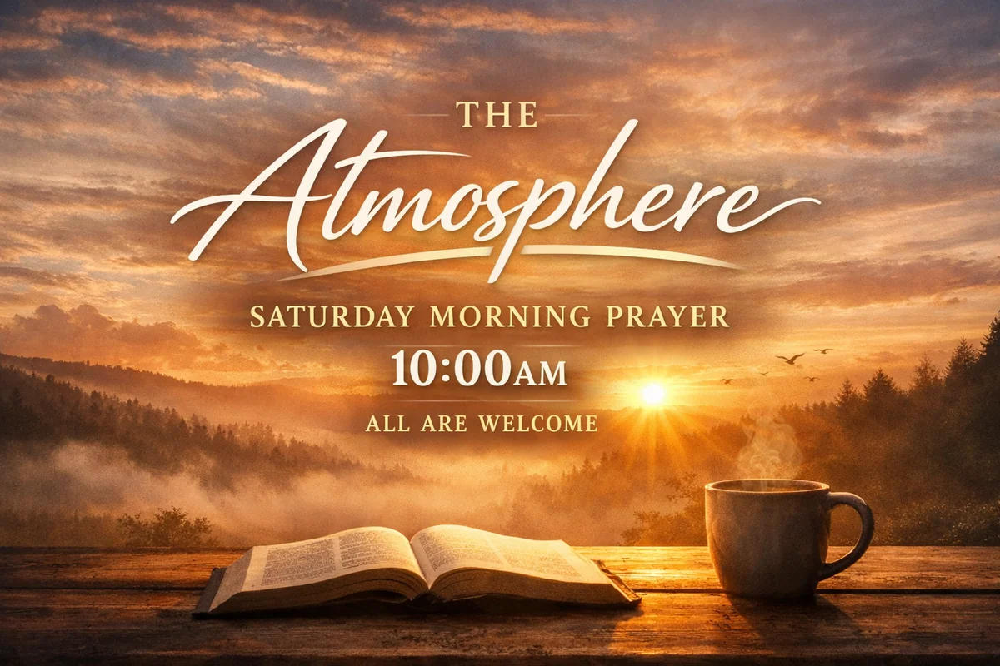
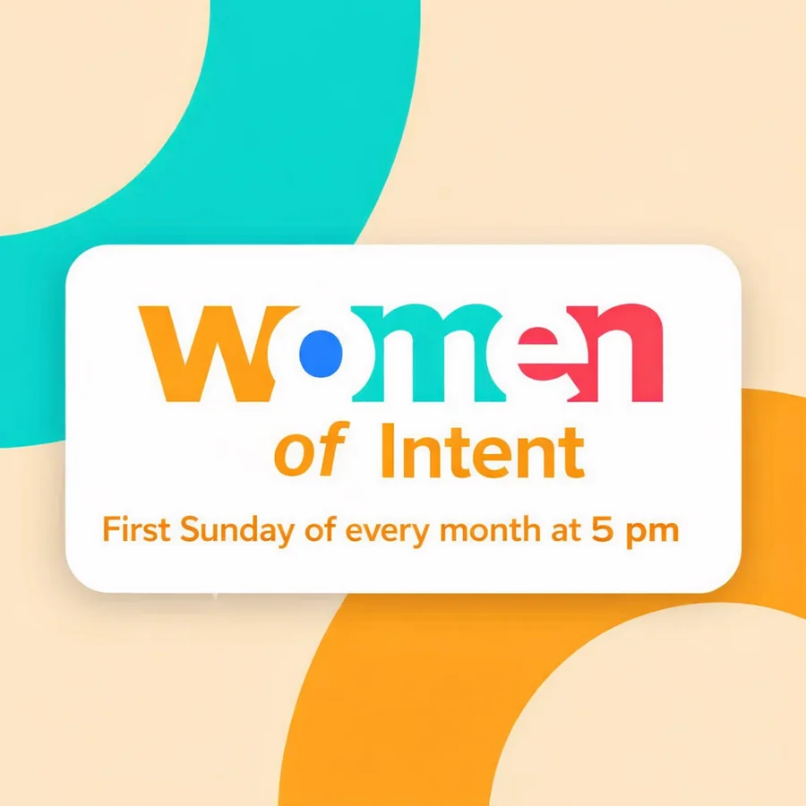
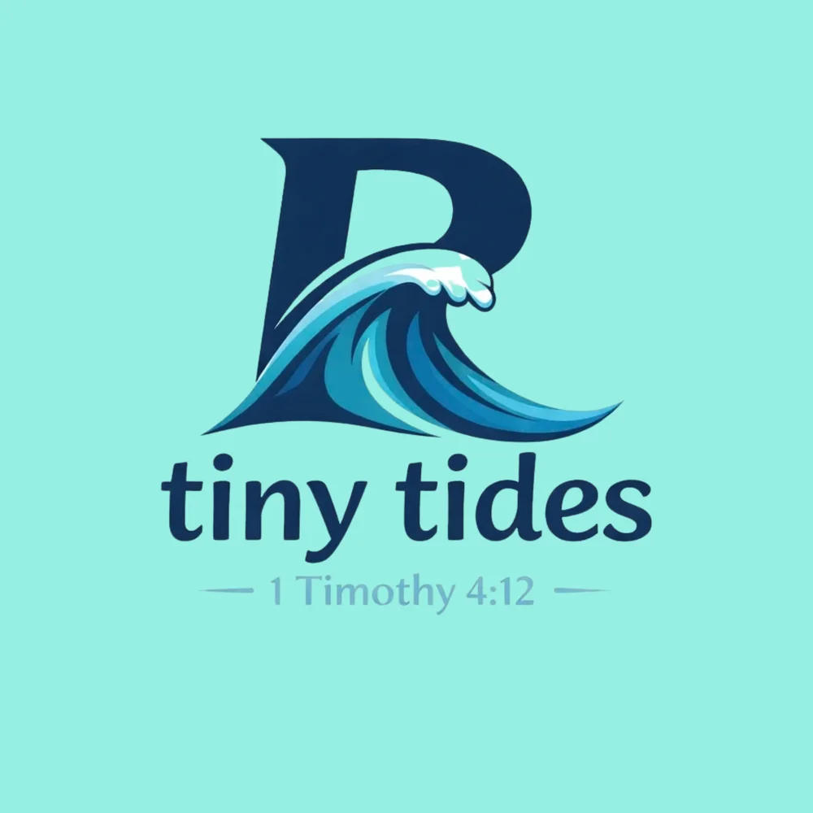
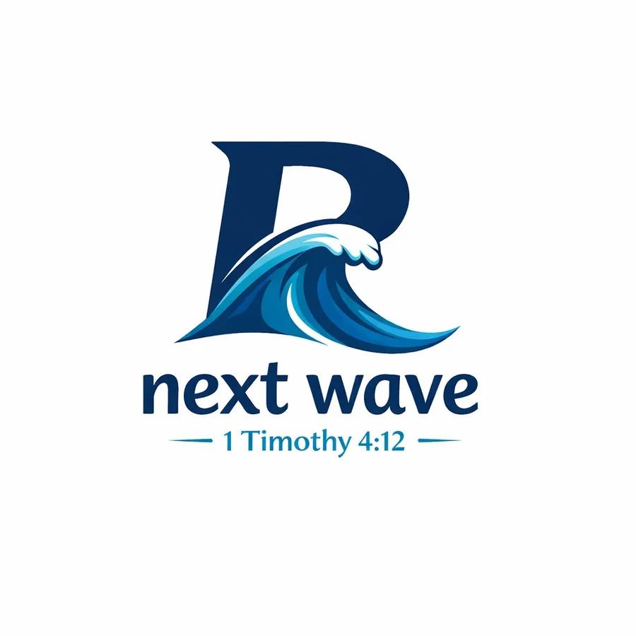
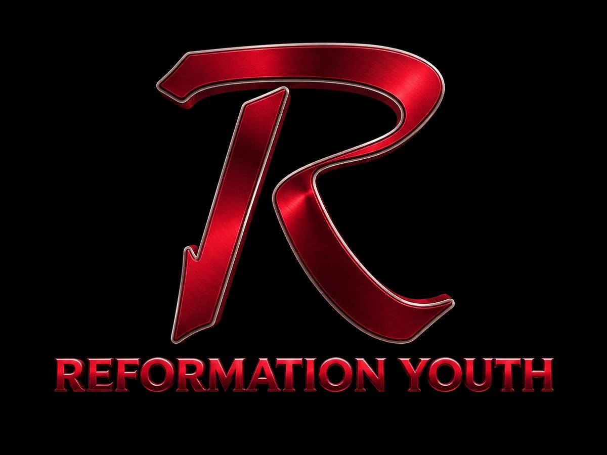
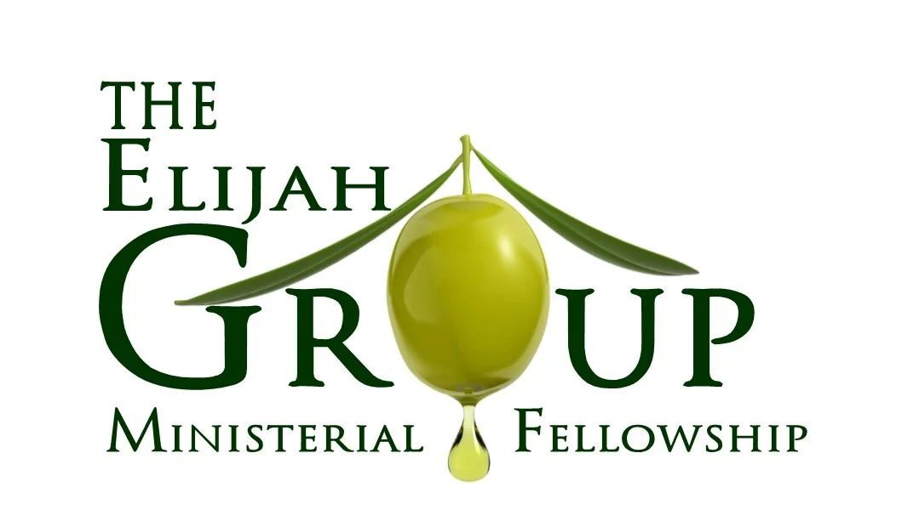

Featured weekly gathering
DISCIPLE ONE.
BE ONE. MAKE ONE.
Wednesday nights 6:30 PM
Go deeper into the Word with Disciple One, our Wednesday night Bible teaching and discipleship gathering.
Watch Disciple One ↗Ministries are where relationships grow, gifts are developed, and purpose becomes action.
From time in the Word to prayer and community, there is a place to take your next step at Reformation Church.
BE ONE. MAKE ONE.
Wednesday nights 6:30 PM
Go deeper into the Word with Disciple One, our Wednesday night Bible teaching and discipleship gathering.
Watch Disciple One ↗
Every Saturday 10:00 AM
Join us for Saturday morning prayer. All are welcome.
Plan your visit ↗
First Sunday of every month 5:00 PM
Women of Intent meets on the first Sunday of every month.
Get connected ↗
Ages 0–3
Tiny Tides serves our youngest children, from birth through age three.
Get connected ↗
Ages 4–11
Next Wave is our ministry for children ages four through eleven. Follow its official Facebook page for updates.
Visit Next Wave on Facebook ↗
Grades 6–12
Reformation Youth Group welcomes students in sixth through twelfth grade. Connect with us for details and ministry updates.
Get connected ↗
The Elijah Group is part of the Reformation Church ministry family. More ministry and meeting information will be added when confirmed.
Get connected ↗Discover your next step with our church family.